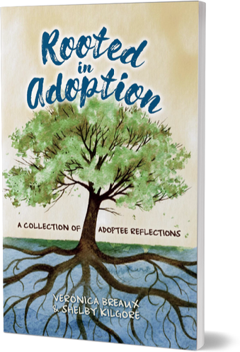

Adoptive parents are not always given the proper tools, and I have seen many
confused and frustrated. They look for
guidance among other adoptive parents and professionals when it is the voice of the adoptee that should be valued the
most.
RIA was created to help those seeking assistance when they most need it.
RIA stands behind 3 things:
ADVOCACY
We believe adoptees are the leading
experts in adoption. We advocate for
openness between adoptive families
and adoptees and equal rights for
adoptees to have access to birth
records, medical information, and
their original birth certificates
EDUCATION
Education is the most empowering tool
you can have. The more knowledge you
have, the more confidence you will have
when opening discussions of adoption
in your home.

TRUTH
Healing begins with truth. We passion-
ately blieve adoptive children should
always be told the truth regarding their
adoption stories.
- 
-
Rooted in Adoption: A Collection of Adoptee Reflections is a compilation of experiences from those who have been adopted. The authors asked adoptees of various ages, backgrounds, and experiences to share their personal adoption stories. Adoptees are the true leading experts on adoption. They discuss some of the joys and challenges associated with living a lifetime of unanswered questions leading to their past and identity. Jules Alvarado, internationally renowned public speaker, author, and Licensed Professional Counselor shares her insight on adoption related trauma.
Know More Buy Now